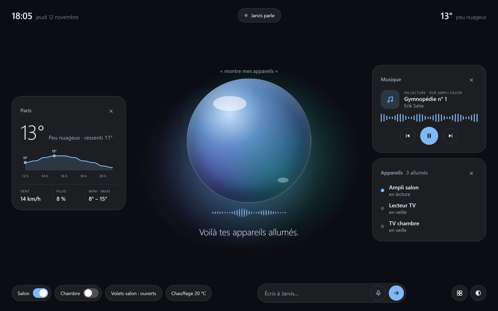
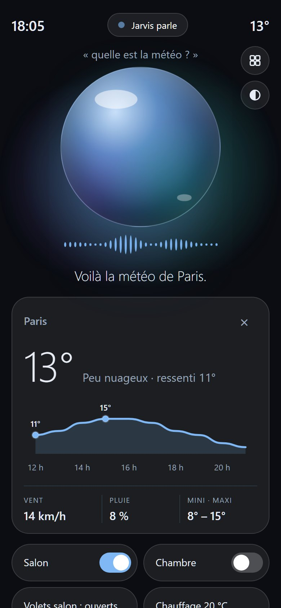

J.A.R.V.I.S
It listens, answers, and acts on your computer. And when it doesn't know, it says so.
Before any model wakes up.
Time, calculations, conversions, the state of your machine: a chain of local tools answers first, without calling any model. Everything else goes to Gemini — or to a local Ollama model if Gemini goes quiet.
It doesn't just talk.
Home Assistant lights and plugs, email sorted and replies drafted, winget updates, VPN, Spotify and Deezer. Tabs, windows and apps are driven directly, without going through the model.
It stays quiet when it doesn't know.
An assistant that says “done” without doing anything is worse than one that refuses. When Home Assistant refuses an action, JARVIS reports a failure — not a success.
It works with your coding agents.
It hands tasks to the agent of your choice, in a project you declared. Without one, its own file agent reads, searches and edits the project — locked inside its folder.
An interface you actually live in.
The Glass Orb: your everyday view of JARVIS. The orb in the middle, what you said above it, its answer below — light by day, dark at night. Glass cards appear when you talk about them: weather, music, your devices, your homework. A mic button lets you talk without saying “Jarvis”. On your desktop and on your phone — and the full dashboard, with its Agents tab that maps every AI tool on your computer, is one click away.


Your machine. Your data.
Conversations, settings and email stay local. Irreversible actions show exactly what will be sent and wait for your yes. Every optional feature ships switched off.
Give your computer a voice.
Free, with its code public on GitHub. The 11 MB installer downloads JARVIS instead of bundling it, so you can read everything first. Python 3.10–3.13, and Node.js for the interface.